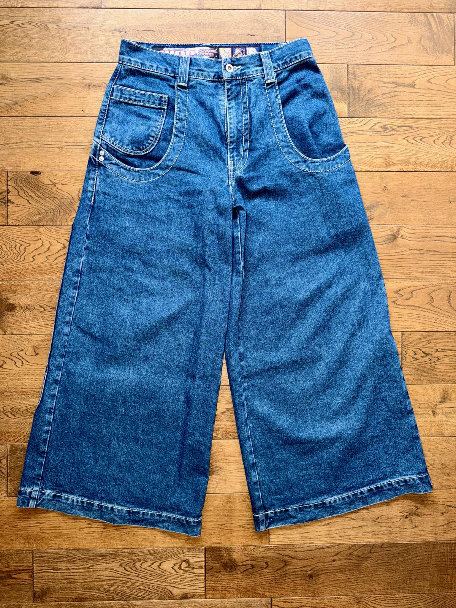
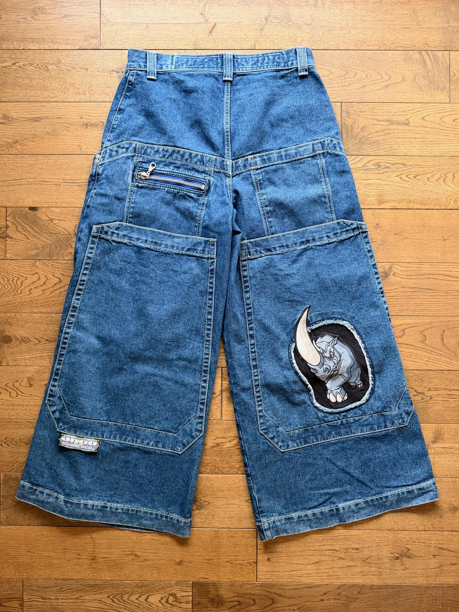
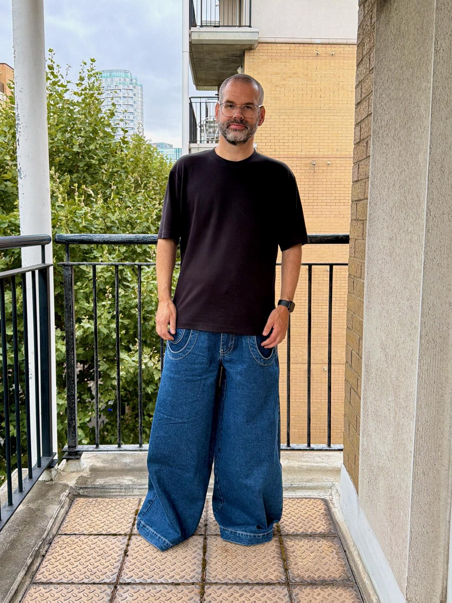
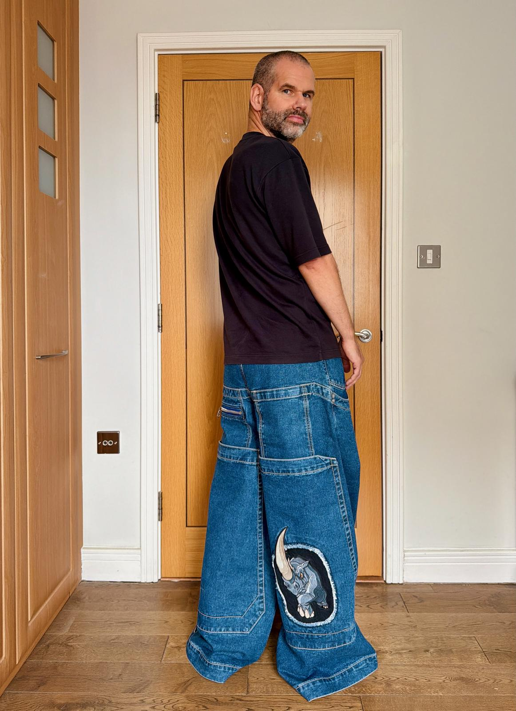
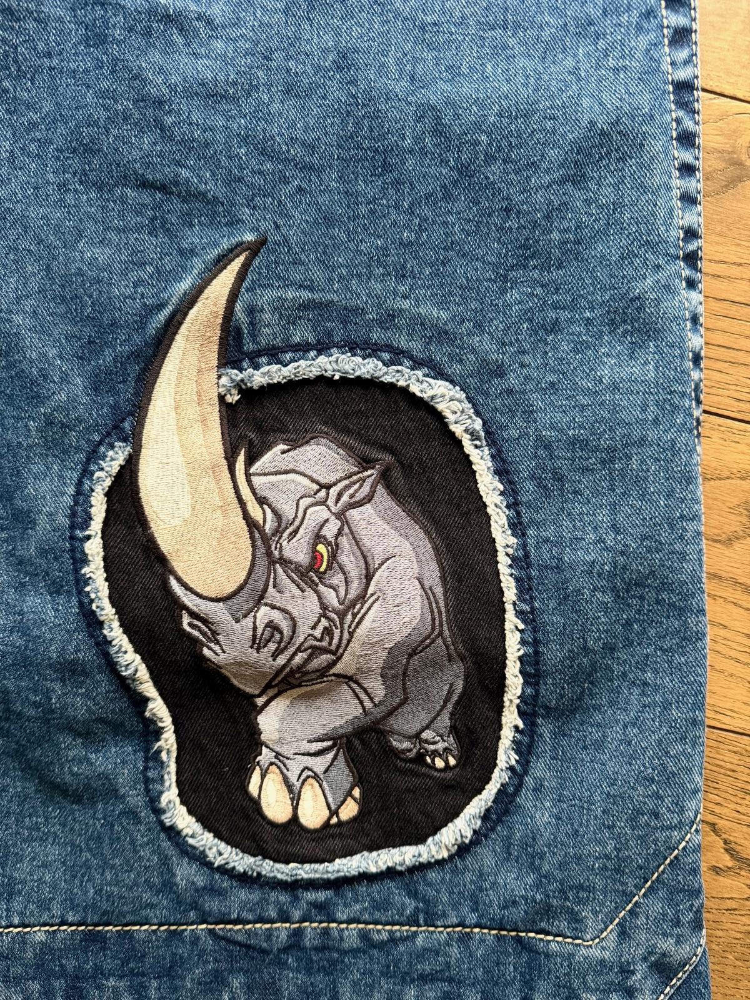
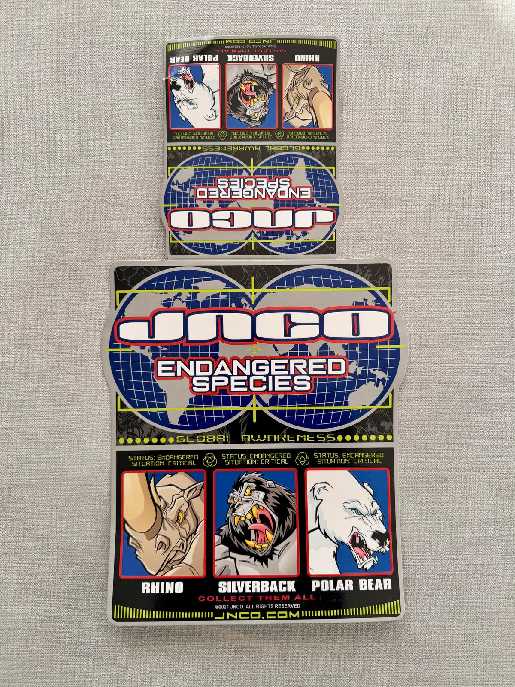
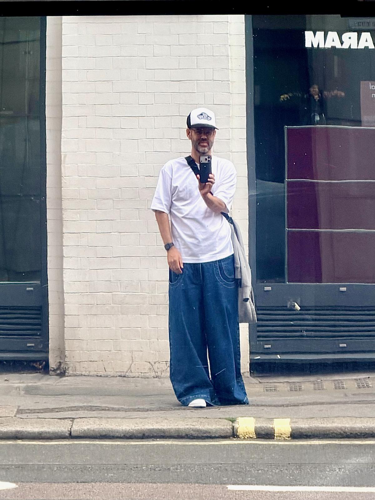

The Rhinos are the second pair of JNCOs I bought. After the almost-conventional Twin Cannons, I wanted to push the limit a little further and go wider.
The leg openings on these are 34” (that’s wider than my waist!), which was definitely a noticeable step up!


The Rhinos are definitely beyond what most would call “normal” baggy jeans. The heavy denim and the wide legs make them feel amazing to wear.
Despite going for the 30” inseam, I do step on the hems a bit in these. I sometimes catch myself pulling them up a little bit to stop them from dragging on the ground. It’s not too bad, but I’ve noticed my white socks get dirty with what they whip up.
Still, these jeans are perfectly fine to wear out and about. You won’t trip or stumble on them, and I’ve never had them get caught on anything. Despite the huge, deep back pockets, they are actually more practical than the Twin Cannon for the modern iPhone-carrying person, with smaller pockets above the big ones.


The Rhinos are a limited edition in the Endangered Species series. The other two in the series are Polar Bears and Silverbacks, both of which would be nice additions to my collection.
I worried the Rhino patch would be too prominent, but no need to worry - it looks great!

To be honest, the flasher is a bit disappointing, though, as it focuses more on collecting all three pairs than on the Rhino specifically, which feels like a missed opportunity.

